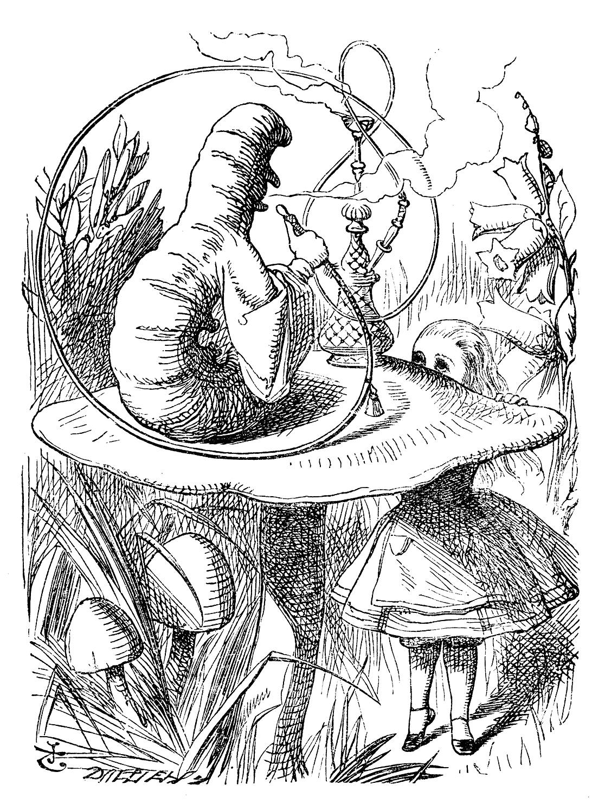
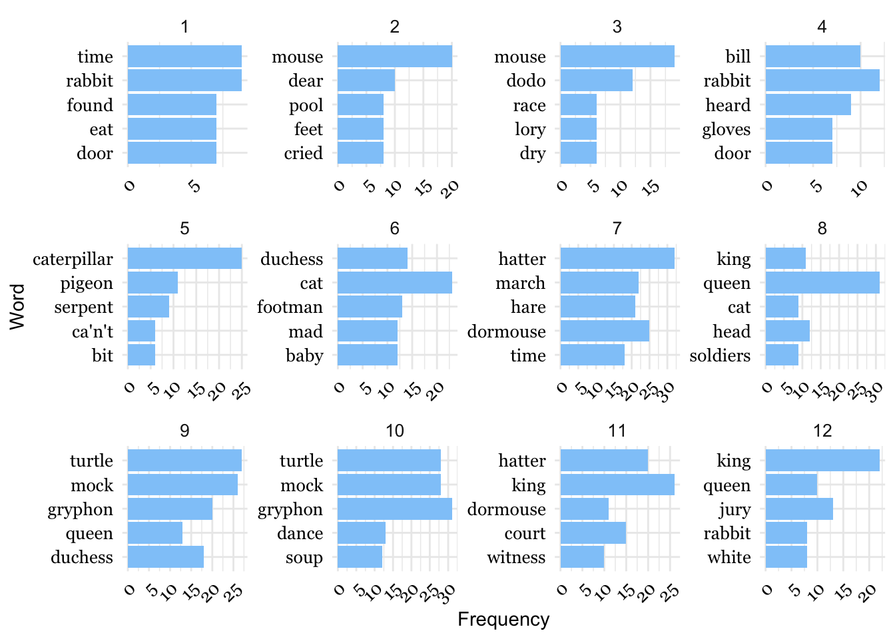
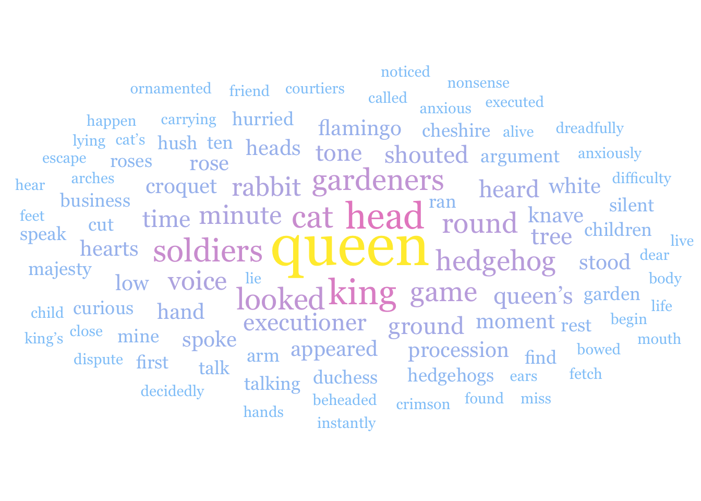

Cleaning and reclassifying geospatial vector and raster data to find optimal regions.
Author
Natalie Smith
Overview
Alice’s Adventures in Wonderland, better known as Alice in Wonderland, is a novel by Lewis Carroll that follows the journey of a young girl named Alice who falls down a rabbit hole into a whimsical world. The following text analysis includes a visualization of word counts for the most frequently used words in the text, as well as a sentiment analysis.

Alice encounters the Caterpillar, Wikipedia.
Import Libraries:
library(tidyverse)
── Attaching core tidyverse packages ──────────────────────── tidyverse 2.0.0 ──
✔ dplyr 1.1.4 ✔ readr 2.1.4
✔ forcats 1.0.0 ✔ stringr 1.5.0
✔ ggplot2 3.4.3 ✔ tibble 3.2.1
✔ lubridate 1.9.2 ✔ tidyr 1.3.0
✔ purrr 1.0.2
── Conflicts ────────────────────────────────────────── tidyverse_conflicts() ──
✖ dplyr::filter() masks stats::filter()
✖ dplyr::lag() masks stats::lag()
ℹ Use the conflicted package (<http://conflicted.r-lib.org/>) to force all conflicts to become errors
library(tidytext)library(pdftools)
Using poppler version 23.04.0
library(ggwordcloud)library(here)
here() starts at /Users/nat/Documents/git/nataliesmith.github.io.
library(ggplot2)library(RColorBrewer)
Import and Wrangle Data:
I began by importing the book as a PDF and converting it into a dataframe. Then, I tidied the data to ensure effective organization, including chapters as variables. Next, I conducted a word count analysis by chapter, excluding common stop words and filtering out occurrences of the character name ‘Alice.’ To identify the top five words per chapter, I grouped the data by chapter, sorted it by word count, and extracted the top five words using slicep (1:5).
#bring in textalice_text <- pdftools::pdf_text(here("portfolio","alice_analysis","data","alice.pdf"))
# Plot top 5library(ggplot2)ggplot(data = top_5_words, aes(x = n, y =reorder(word,n)))+geom_col(fill ="#90CAF9") +facet_wrap(~chapter, scales ="free") +scale_fill_brewer(palette ="Set1") +labs(x ="Frequency", y ="Word") +theme_minimal() +# Use minimal themetheme(legend.position ="none", # Remove legendaxis.text.x =element_text(angle =45, hjust =1), # Rotate x-axis labels for better readabilitystrip.text =element_text(size =10),axis.text =element_text(family ="Georgia", size =10, color ="black")) +scale_x_continuous(breaks =seq(0, max(top_5_words$n), by =5))

Figure 1: Top five words per chapter in Alice in Wonderland after the elimination of stopwords and exclusion of the name Alice.
Word Cloud:
Taking it a step further, I used the cleaned word count data (excluding stopwords and occurrences of “Alice”) and filtered it by chapter 8. After arranging the data by word count, I selected the top 100 words to generate a word cloud.
# Create the Alice palettealice_palette <-c("#90CAF9", "hotpink", "#FFEB3B")# Create the word cloud plotch8_cloud <-ggplot(data = ch8_top100, aes(label = word)) +geom_text_wordcloud(aes(color = n, size = n, family ="Georgia"), shape ="circle") +scale_size_area(max_size =15) +scale_color_gradientn(colors = alice_palette) +theme_minimal()ch8_cloud

Figure 2: Word cloud for Chapter 8 of Alice in Wonderland, highlighting “Queen” as the predominant term.
Sentiment Analysis:
To perform sentiment analysis, I utilized the Bing lexicon containing lists of positive, negative, and neutral words. I joined the Bing lexicon to my wrangled Alice data frame. Then, I grouped the data by chapter and sentiment and summarized, to determine the overall sentiment of the book. Finding the book to have a log ratio of -0.068 (more negative), I was curious to see the sentiment breakdown of each chapter.
bing_lex <-get_sentiments(lexicon ="bing")
alice_bing <- alice_words %>%inner_join(bing_lex, by ='word')
Figure 3: Sentiment analysis by chapter reveals that despite its reputation for whimsy, Alice in Wonderland is characterized by negativity. Of its 12 chapters, 8 are categorized as negative.
Carroll, Lewis. 1865. “Alice’s Adventures in Wonderland.” Dover Publications.